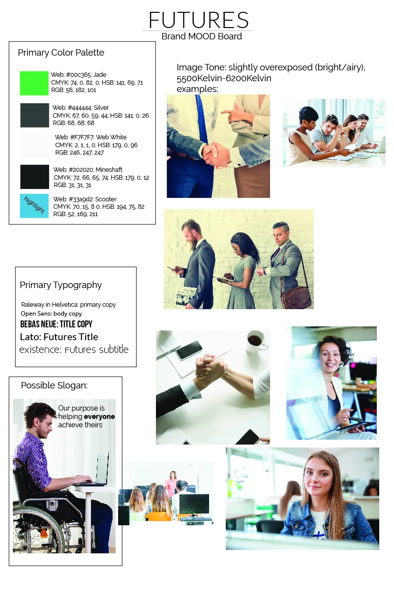
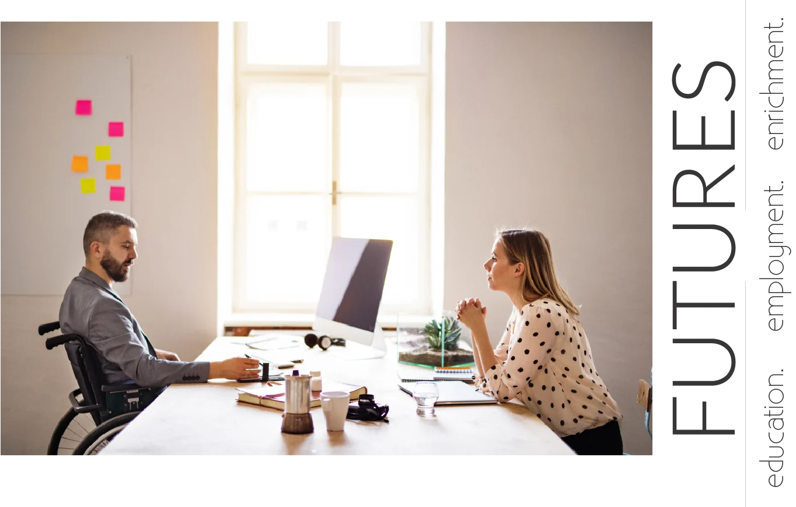

BRAND STRATEGY & LAUNCH
Futures
A purpose, expressed as a brand.
Brand strategy · Creative project leadership · Print & digital communications
Brand and message development · Concept board and program collateral · Launch communications · Post-launch communication support
 Enlarge image
Enlarge image Enlarge image
Enlarge image
Enlarge image
Enlarge imageTHE THINKING
Context, craft,
and delivery.
The context
Futures brought education, enrichment, and employment together in one offering. The creative challenge was to explain that breadth through a recognizable identity, clear messaging, and materials that made the program approachable.
My contribution
My work extended from ideation and business planning through branding, collateral, launch communications, and 18 months of post-launch support. I coordinated with founders, program partners, and executive stakeholders to connect the identity with the service being built.
Making the work useful
The work required alignment across business planning, program development, design, and communication. Concept boards and collateral gave stakeholders concrete material to review while the program and launch needs evolved.